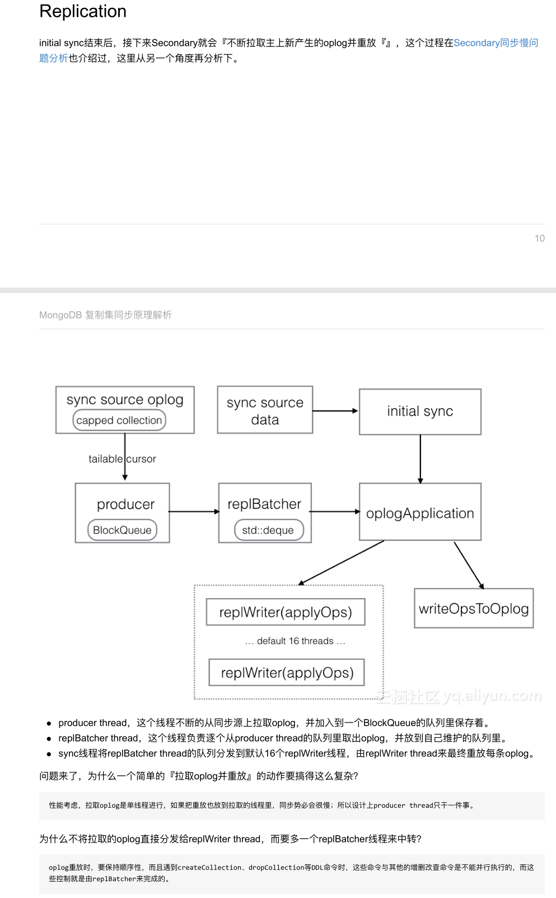
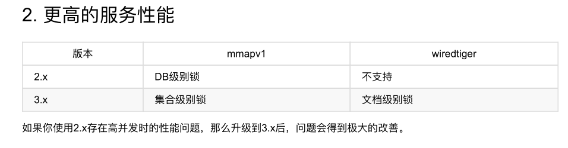
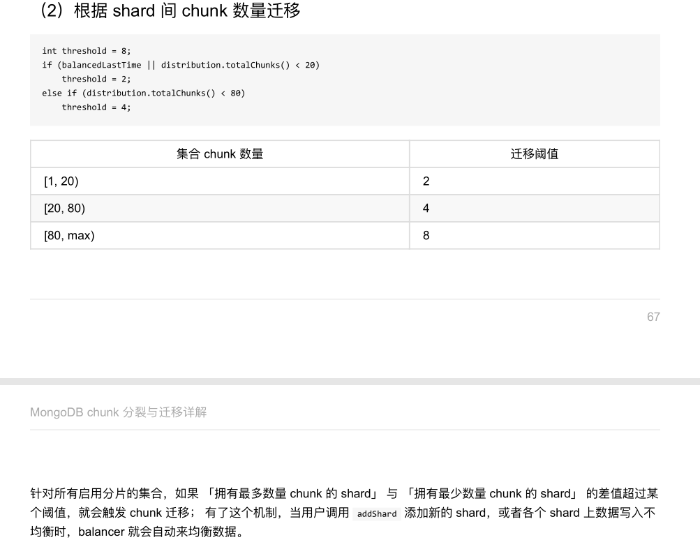
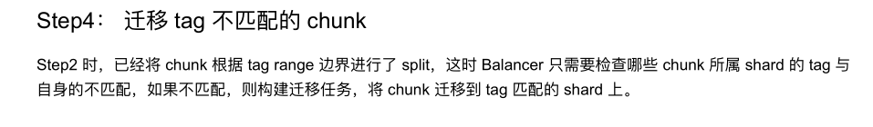
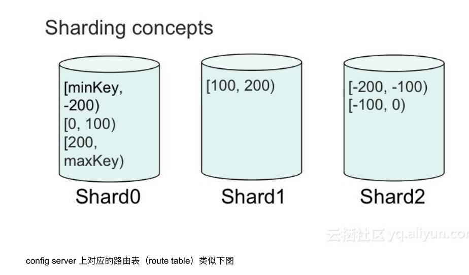
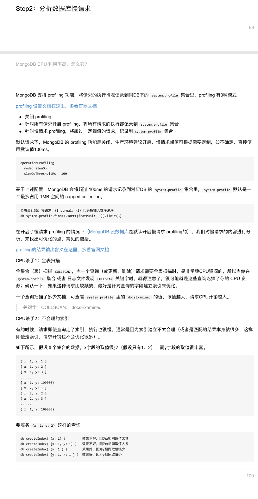
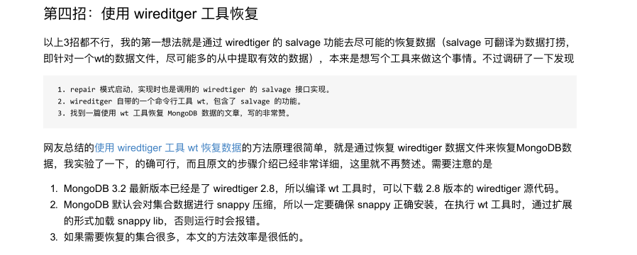
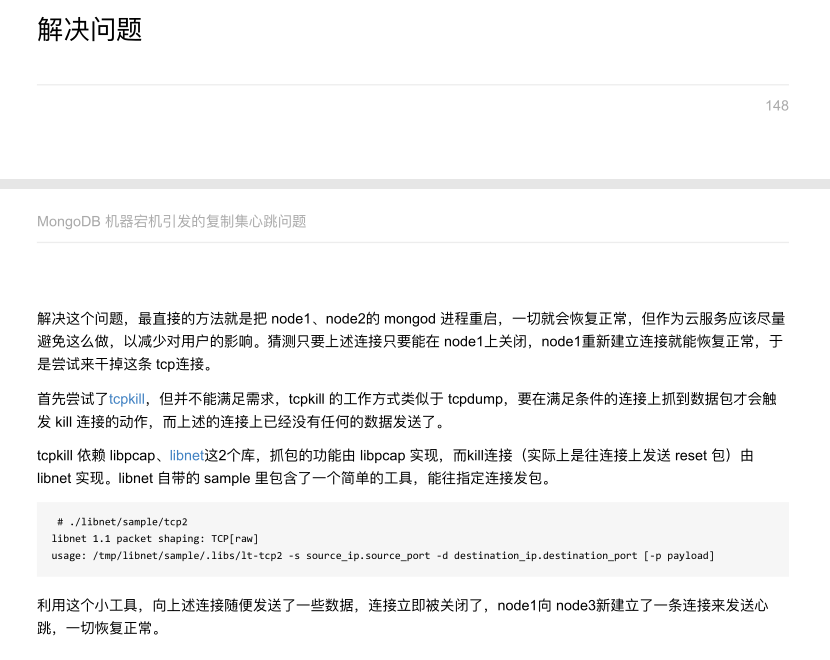
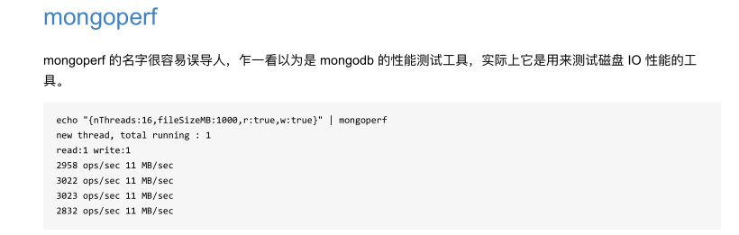

MongoDB复制集原理
复制集简介
Primary选举
特殊的Secondary
Arbiter
Priority0
Vote0
Hidden
Delayed
数据同步
修改复制集配置
细说选举
复制集的读写设置
Read Preference
Write Concern
异常处理
MongoDB同步原理解析

initial sync
Replication

注意事项
MongoDB索引原理
为什么需要索引
MongoDB索引类型
单字段索引
复合索引
多key索引

其他类型索引
索引额外属性
索引优化
db profiling
查询计划

参考资料
4.0 事务
事务与存储引擎
事务时序统一
事务对cache的影响
Read as of a timestamp 与oldest timestamp
引擎层Rollback与stable timestamp
分布式事务
MongoDB writeConcern原理解析
writeConcern选项
w: majority 解析
MongoDB readConcern原理解析
readConcern vs readPreference
readConcern解决什么问题
readConcern实现原理
注意事项
journal与oplog
journal
oplog
mongodb的一次写入
谁先写入
MongoDB如何保证oplog顺序
并发写oplog时，如何加锁
如何保证Primary上oplog顺序

如何保证Secondary上oplog顺序与Primary一致？
mongorocks引擎原理解析
mongodb与mongorocks关系
mongodb kv存储引擎模型
创建删除集合
数据存储及索引
mongorock存储管理
创建集合、写数据
读取数据

删除集合
文档原子性
特殊的oplog
集合大小元数据管理
数据备份
总结
MMAPv1存储引擎原理解析
Database
Namespace
数据文件
Extent
Record
写入Record
删除Record
更新Record
查询Record
In-place update in MongoDB
MongoDB 4.0 新特性简介
多文档事务
聚合类型转换
非阻塞的备节点读(Non-Blocking Secondary Reads)
迁移速度提升40%
扩展修改订阅
体验MongoDB 4.0 RC
MongoDB 3.4 功能改进一览
分片集群
Config server的Primary节点负责负载均衡
不再支持SCCC Config server的模式
Sharding Zones
Faster Balancing
复制集
支持配置Primary追数据的时间
支持Linearizable Read Concern
提升全量同步
Decimal Type
Aggregation
Collation and Case-Insensitive Indexes

视图
安全提升

工具
General Enhancements
Changes Affecting Compatibility
升级步骤
MongoDB 3.4 Collation特性
MongoDB 3.4 复制集全量同步改进
告别MongoDB 2.x 拥抱3.x版本的5大理由
更安全的数据库
更高的服务性能

更低的存储成本
更快的复制
更简单、更高效的分片集群
升级步骤建议
版本使用建议
MongoDB Sharded cluster架构原理
为什么需要Shareded cluster
Sharded cluster架构
数据分布策略
Mongos
Config Server
config database
config.shards
config.databases
config.collections

config.chunks
config.settings
其他集合
参考资料
关于MongoDB Sharding，你应该知道的
MongoDB Sharded Cluster原理
什么时候考虑用Sharded Cluster
如何确定shard、mongos数量
如何选择shard key
关于jumbo chunk及chunk size
Tag aware sharding
关于负载均衡
moveChunk归档设置
recoverShardingState设置
关注问题多
MongoDB sharding chunk分裂与迁移详解
Primary shard
何时触发chunk分裂
何时触发chunk迁移
根据shard tag迁移
根据shard间chunk数量迁移

removeShard触发迁移
chunkSize对分裂及迁移的影响
如何减小分裂及迁移的影响
参考资料
MognoDB sharding迁移那些事 一
为什么要进行chunk迁移
迁移工作谁来做
Balancer如何工作
Step1 获取集合对应的chunk分布信息
Step 2 检查是否需要分裂
Step3 迁移draining shard上的chunk
Step 4 迁移tag不匹配的chunk

Step5 负载均衡迁移
Step 6 执行迁移
参考资料
MongoDB sharding迁移那些事 二
moveChunk命令
迁移步骤

Step1 mongos发送moveChunk给源Shard
Step2 源Shard通知目标shard开始同步chunk数据
Step3 目标Shard同步chunk数据到本地
Step4 源shard更新config server元数据
Step 5 源shard删除chunk数据
总结
MongoDB sharding迁移那些事 三
关闭Balancer
针对某个集合关闭Balancer
设置Balancer时间窗口
设置迁移选项
设置chunkSize
参考资料
MongoDB Sharded Cluster路由策略
Mongos路由策略
Sharding concepts

Routing table
Sharding Version Protocol
Shard ing Version Protocol
Sharded Single Doc Write
config server复制集挑战
New Feature
New Feature
Read after OpTime Example
参考资料
分片集群Mongos到Shard请求管理
Mongos到Shard请求管理
关于TaskExecutor
关于连接池
总结
什么场景应该用MongoDB
MongoDB Driver 使用正确得姿势连接复制集
使用复制集时你需要知道的
正确连接复制集的姿势
常用连接参数
MongoDB Driver 使用正确的姿势连接分片集群
使用分片集群时你需要知道的
正确连接分片集群的姿势
常用的连接参数
MongoDB CPU 利用率高，怎么破
Step 1 分析数据库正在执行的请求
Step 2 分析数据库慢请求

Step 3 服务能力评估
MongoDB安全checklist及最优配置模板
MongoDB管理： 副本集创建集合时慎用{autoIndexId:false}选项
MongoDB默认对_id字段建立索引
什么场景不需要id索引
使用副本集时必须对id建立索引
副本集中id索引为什么时必须的
AliCloudDB for MongoDB的改进

MongoDB管理： 如何优雅的重启复制集
MongoDB管理 如何重命名数据库
MongoDB管理 慎用local、admin数据库
论MongoDB索引选择的重要性
问题背景
MongoDB的find getMore特性
索引的选择
总结
如何通过公网访问MongoDB云数据库
环境准备
目标
使用iptables
使用haproxy
参考资料
MongoDB serverStatus.globalLock解析
globalLock
globalLock.totalTime
globalLock.currentQueue.total
globalLock.currentQueue.total
globalLock.currentQueue.readers
globalLock.currentQueue.writers
globalLock.activeClients
globalLock.activeClients.total
readers & writers
Client锁的状态
详解globalLock状态转换
总结
MongoDB Secondary延时高(同步锁)问题分析
背景介绍
问题1 单个请求耗时长
问题2 多个请求加起来耗时长
如何评估重放oplog时锁的影响有多大
参考资料
MongoDB Secondary同步慢问题分析
MongoDB Primary为何持续出现oplog全表扫描
备如何选择同步源
条件1 备上最新的oplog时间戳>=同步源上最旧的oplog时间戳
条件2 如果minvalid处于不一致状态，则minvalid里的时间戳在同步源上必须存在
oplogStartHack
总结
MongoDB 3.2.9 请求hang分析及wiredtiger调优
MongoDB 创建大量集合测试问题
MongoDB 哈希分片为什么分布不均匀
MongoDB位置查询内存使用优化
MognoDB无法启动，如何恢复数据
如何恢复MongoDB数据
1 从复制集其他节点同步数据
2 从最近的一个备份集回复数据
3 repair模式启动MongoDB
4 使用wiredtiger工具恢复

5 从文件里提取bson文档来恢复
总结
Secondary节点为何阻塞请求近一个小时
大量的集合为何导致Secondary无法同步
MongoDB dropDatabase后，数据能恢复么
1 通过备份恢复
2 通过oplog恢复
3 通过分析数据文件恢复

总结
了解更多
机器宕机引发的复制集心跳异常问题
问题背景
宕机引发的问题
解决问题

为什么关闭tcp keepalive
为什么MongoDB连接数被用满了？
Mongod为什么需要限制连接数
Driver如何使用？
MongoClient连接池配置多个合适？
使用MongoDB存储商品分类信息
关系型数据库解决方案
针对不同商品，创建不同的表
所有商品存储到单张表
提取公共属性，多表继承
Entity Attribute Values 形式存储
MongoDB解决方案
扩展
使用MongoDB储存日志数据
模式设计
写日志
查询日志
数据分片
应对数据增长
参考资料
MongoDB数据建模小案例：多列数据场景
数据结构定义
数据操作
索引创建
MongoDB GIS
附录
MongoDB数据建模小案例：多列数据场景
MongoDB数据建模小案例：朋友圈评论内容管理
MongoDB数据建模小案例：物联网时序数据库建模
MongoDB生态-官方命令行工具
MongoShell
mongostat
mongotop
mongoimport mongoexport
mongodump mongorestore
mongooplog
mongofiles
mongosniff
mongoperf

MongoDB生态-客户端Driver支持
MongoDB生态-社区开源工具篇
shell提升工具mongo-hacker
schema分析工具variety
Restful接口Eve
索引优化工具dex
对象关系映射mongoengine
MongoDB生态-可视化管理工具
MongoDB Cloud Manager
MongoDB compass
MongoDB Atlas
MongoClient
mongo-express
adminMongo
HumongouS.io
NoSQL Manager for MongoDB
robomongo
MongoChef
mongobooster
Mongo Manafement Studio
Other tools